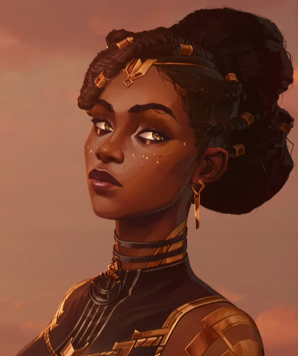
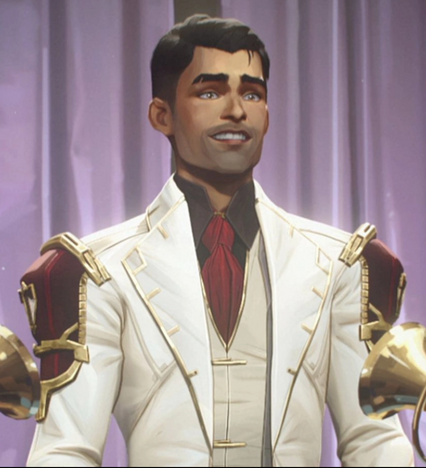
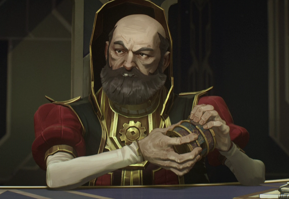
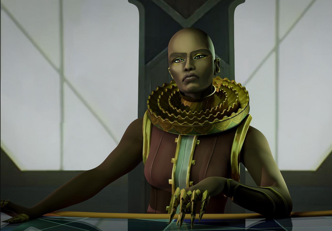

Who I think the Arcane Council Members are, that will not see season 2
Spoilers for Arcane the series, just my opinions, however I could be right
Mel Medarda
I love this woman, however that rocket was coming towards her. Might have been the last thing she’ll ever see. I saw her mom in the trailer, and yet I did not see her. So I think her mom will step up and maybe follow Mel’s route of peace, or lash out in revenge for losing another child. Or maybe she’ll be gravely injured and put on the sidelines for most of season 2.
Victor
Although not a part of the council, he was there when the final voting happened. He’s gonna live, however he may also be gravely injured as well. He’s got to get to that final in-game form one way or another.
Jayce Talis
He’s going to live, I’m not going to fight for my reasoning as much though. I just know he is.
Bolbok
Going by one of his quotes, “The Arcane is the curse of our world. My race was nearly destroyed by it,” I think he’s screwed for sure. The rocket uses arcane, otherwise known as magic. His kind may be wiped out with the rocket, sadly.
Hoskel
He can’t even solve a puzzle made for kids. He has no purpose to the story besides comic relief or being someone to hate. He might live.
Salo
I feel like Salo is even less memorable; I think he won’t make it.
Shoola
Her design is really cool. She’s tied with Bolbok. If Bolbok is offed, Shoola better live.
Cassandra Kiramman
This is the only one with major spoilers because it’s quite literally revealed in one of the trailers. One of the enforcers says, "We will avenge your mother," to who I assume would be Caitlyn. She’s definitely not going to see season 2.
Conclusion
In conclusion, I will avoid any spoilers or trailers for season 2. I want to go in completely blind on November 23rd and watch the whole season in one go. Enjoy the intro for the show!
https://www.youtube.com/watch?v=E9GuZK_KFV0